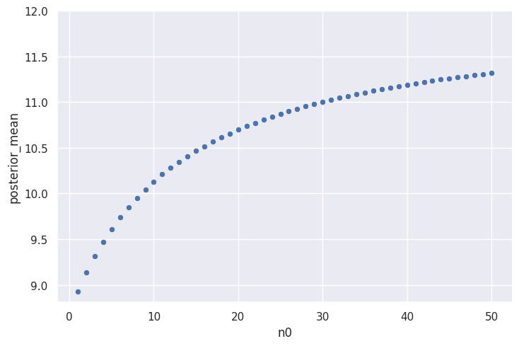

3.3 腫瘍数#
import pandas as pd
import numpy as np
from scipy import stats
import seaborn as sns
import warnings
sns.set_theme()
warnings.simplefilter("ignore")
y_A = [12, 9, 12, 14, 13, 13, 15, 8, 15, 6]
y_B = [11, 11, 10, 9, 9, 8, 7, 10, 6, 8, 8, 9, 7]
print("A系統のデータの要約統計量")
print(stats.describe(y_A))
print()
print("B系統のデータの要約統計量")
print(stats.describe(y_B))
A系統のデータの要約統計量
DescribeResult(nobs=10, minmax=(6, 15), mean=11.7, variance=9.344444444444445, skewness=-0.6848989298454216, kurtosis=-0.784392624713516)
B系統のデータの要約統計量
DescribeResult(nobs=13, minmax=(6, 11), mean=8.692307692307692, variance=2.3974358974358974, skewness=-0.024886573315266888, kurtosis=-0.9230890217049392)
a#
def summarise_poisson_gamma(a, b, y, print_results=False):
# 結果を保存する辞書
results_dict = {}
# 事後分布のパラメータ
a_posterior = a + np.sum(y)
b_posterior = b + len(y)
results_dict["a_posterior"] = a_posterior
results_dict["b_posterior"] = b_posterior
# 事後平均
posterior_mean = a_posterior / b_posterior
results_dict["posterior_mean"] = posterior_mean
# 事後分散
posterior_var = a_posterior / (b_posterior**2)
results_dict["posterior_var"] = posterior_var
# 信用区間
credible_interval = stats.gamma.interval(
confidence=0.95, a=a_posterior, scale=1 / b_posterior
)
results_dict["credible_interval"] = credible_interval
if print_results:
print(
"Posterior Distributiion:\n",
f"\tgamma({a_posterior}, {b_posterior})",
end="\n",
)
print("Posterior Mean:\n", f"\t {posterior_mean}", end="\n")
print("Posterior Variance:\n", f"\t {posterior_var}", end="\n")
print("95% Credible Interval:\n", f"\t {credible_interval}", end="\n")
return results_dict
results_A = summarise_poisson_gamma(
a=120,
b=10,
y=y_A,
print_results=True,
)
Posterior Distributiion:
gamma(237, 20)
Posterior Mean:
11.85
Posterior Variance:
0.5925
95% Credible Interval:
(10.389238190941795, 13.405448325642006)
results_B = summarise_poisson_gamma(
a=12,
b=1,
y=y_B,
print_results=True,
)
Posterior Distributiion:
gamma(125, 14)
Posterior Mean:
8.928571428571429
Posterior Variance:
0.6377551020408163
95% Credible Interval:
(7.432064219464302, 10.560308149242363)
b#
df_3_3 = pd.DataFrame()
df_3_3["n0"] = np.arange(1, 50 + 1)
df_3_3["a"] = df_3_3["n0"].mul(12)
df_3_3["b"] = df_3_3["n0"]
df_3_3["posterior_mean"] = df_3_3.apply(
lambda row: summarise_poisson_gamma(a=row["a"], b=row["b"], y=y_B)[
"posterior_mean"
],
axis=1,
)
df_3_3.head()
| n0 | a | b | posterior_mean | |
|---|---|---|---|---|
| 0 | 1 | 12 | 1 | 8.928571 |
| 1 | 2 | 24 | 2 | 9.133333 |
| 2 | 3 | 36 | 3 | 9.312500 |
| 3 | 4 | 48 | 4 | 9.470588 |
| 4 | 5 | 60 | 5 | 9.611111 |
_ = sns.relplot(
df_3_3,
x="n0",
y="posterior_mean",
aspect=1.5,
).set(ylim=(None, 12.0))

\(\theta_B\) の事後期待値が \(\theta_A\) の事後期待値 (= 11.85) に近い値をとるためには、大きい \(n_0\) をとる必要がある。 つまり、\(\theta_B = 12\) であるという強い信念が必要となる。
c#
TBW